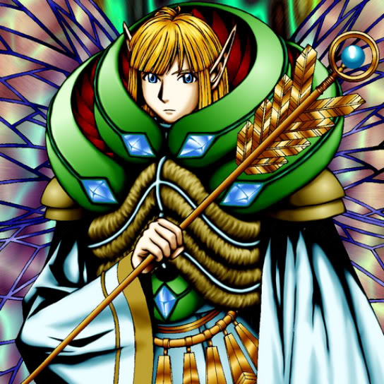

Fairy King Truesdale

Description: "While this card is face-up in the defense position, the power of all your PLANT monsters increases by 500 points."
STATS
ATK: 2200
DEF: 1500
DECK COST
Deck Cost per Card: 42
EFFECT NOT IMPLEMENTED